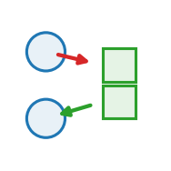

pulse_to_contraction
The FORCE half: activation field -> per-particle MPM force.

exchange acts on: particle prediction: none
The force half of an active-matter actuator: it reads an activation field \(a(\mathbf x,t)\) and converts it into a per-particle MPM body force, returned as a particle delta the MLS-MPM substep consumes. It owns only the mechanical mapping — not when the tissue fires (pacemaker) nor where (pulse_stimulus). This is how a beating heart wall is driven.
Role in Plexus
- Kind — \(\mathcal{S},\mathcal{G}\) Exchange: set ↔︎ field push / pull.
- Acts on —
particle(the level the operator runs at). - Reads —
from - Writes / returns — emits no integrated force — it mutates a field / relation / membership, or feeds a substep.
- Prediction —
none. - Dimensions — 2D.
Mechanism
Reads the activation field a(x,t) (the from: field) and converts its gradient into a per-particle body force, RETURNED as a particle delta. The engine sums it (with any mpm_drag delta) into H.delta(mpm_particle), which the MLS-MPM p2g scatter consumes as the body force (p2g: a_ext += H.delta(particle)) – the per-particle counterpart of the parent-delta path that carries gravity. For a Gaussian activation bump grad(a) points toward the centre, so
F_i = sign * amplitude * grad(a)(x_i) sign = +1 (inward) / -1 (outward)contracts (mode: inward) or expands (mode: outward) the sheet. It owns only the mechanical mapping – not WHEN (pacemaker) nor WHERE (pulse_stimulus).
kind=exchange (field -> set); PREDICTION=None, so the engine never integrates the particle set (g2p owns advection) – the force enters mechanics only through the MPM substep. The engine’s zero_delta resets the delta each outer tick, and the substep loop reads that constant body force on each of its iterations.
Equation
\[ \mathbf F_i \;=\; \begin{cases} \pm\,\text{amplitude}\,\nabla a(\mathbf x_i) & \text{gradient mode (inward / outward)}\\[4pt] \text{amplitude}\,a(\mathbf x_i)\,\mathbf d(\mathbf x_i) & \text{directional mode} \end{cases} \] In gradient mode the force points along \(\pm\nabla a\) (contract / expand); in directional mode a unit vector-field \(\mathbf d\) sets the orientation and \(a\) sets the magnitude.
Parameters
| parameter | role | default |
|---|---|---|
from |
– | required |
amplitude |
contraction_strength | 50.0 |
mode |
gradient_or_directional | “inward” |
channel |
– | 0 |
Minimal spec
fields:
activation: {frame: grid, res: 128}
direction: {frame: vector_grid, res: 128}
operators:
- {op: pulse_to_contraction, at: mpm_particle, from: activation,
mode: directional, direction_from: direction, amplitude: 25.0}Typical schedules
A field-to-particle force in the MPM mechanics chain. The activation is timed and placed upstream, then converted to force, then run through the solver:
pacemaker → pulse_stimulus → pulse_to_contraction → mpm_drag → [mpm_strain, p2g, mpm_grid_update, g2p]×substepsExample output
Identifiability
amplitude is identifiable only up to the material stiffness it works against — a strong force on stiff tissue and a weak force on soft tissue produce the same strain, so observed deformation alone confounds amplitude with Young’s modulus (set via apply_material_map). Separating them needs either a known stiffness map or observations across several activation levels. mode and direction_from are structurally identifiable: inward/outward/directional give qualitatively different, distinguishable strain fields.
Failure modes
| when | what goes wrong |
|---|---|
amplitude too high vs. mpm_drag |
the sheet overshoots and rings / inverts elements; raise mpm_drag k or lower amplitude. |
mode: directional without direction_from |
hard error — directional mode needs a vector_grid field for the orientation. |
| activation not reset each tick | force accumulates; the engine’s zero_delta must clear the particle delta each outer tick. |
force scale vs. MPM a_max |
p2g clamps the body force at a_max; an amplitude above it is silently capped. |
Source
src/plexus/operators/pulse_to_contraction.py — the registered operator.
"""pulse_to_contraction -- the FORCE half: activation field -> per-particle MPM force.
Reads the activation field a(x,t) (the `from:` field) and converts its gradient into
a per-particle body force, RETURNED as a particle delta. The engine sums it (with any
`mpm_drag` delta) into H.delta(mpm_particle), which the MLS-MPM `p2g` scatter consumes
as the body force (`p2g`: a_ext += H.delta(particle)) -- the per-particle counterpart
of the parent-delta path that carries `gravity`. For a Gaussian activation bump grad(a)
points toward the centre, so
F_i = sign * amplitude * grad(a)(x_i) sign = +1 (inward) / -1 (outward)
contracts (mode: inward) or expands (mode: outward) the sheet. It owns only the
mechanical mapping -- not WHEN (`pacemaker`) nor WHERE (`pulse_stimulus`).
`kind=exchange` (field -> set); `PREDICTION=None`, so the engine never integrates the
particle set (g2p owns advection) -- the force enters mechanics only through the MPM
substep. The engine's `zero_delta` resets the delta each outer tick, and the substep
loop reads that constant body force on each of its iterations.
"""
from __future__ import annotations
import torch
import torch.nn.functional as Fnn
from plexus.models.base import Exchange
from plexus.models.registry import register_operator
@register_operator("pulse_to_contraction", level="particle", kind="exchange")
class PulseToContraction(Exchange):
PREDICTION = None # force is consumed by the MPM substep, not engine-integrated
REQUIRES_PARAMS = ["from"] # the activation field to read
MECHANISM_TAGS = ["active_contraction", "field_gradient_force", "directed_active_stress"]
PARAM_ROLES = {"amplitude": "contraction_strength", "mode": "gradient_or_directional"}
def __init__(self, params, device="cpu"):
super().__init__(params, device)
self.field_name = params.get("from")
self.amplitude = float(params.get("amplitude", 50.0))
self.channel = int(params.get("channel", 0))
self.mode = str(params.get("mode", "inward"))
# gradient modes (inward/outward): direction = +/- grad(activation). directional:
# direction = a unit-vector field, magnitude = the (uniform) activation value.
self.sign = {"inward": 1.0, "outward": -1.0}.get(self.mode, 1.0)
self.direction_from = params.get("direction_from")
if self.mode == "directional" and self.direction_from is None:
raise ValueError("pulse_to_contraction mode: directional needs `direction_from:` "
"(a vector_grid field giving the contraction direction)")
self.at = params.get("_at", "particle")
def _sample(self, field_grid, pos, W):
"""Bilinear-sample a `[C, nx, ny]` field at particle positions -> `[N, C]`."""
gxn = (pos[:, 0] / W) * 2 - 1
gyn = (pos[:, 1] / 1.0) * 2 - 1
grid = torch.stack([gyn, gxn], -1)[None, None] # grid_sample expects (x=ny, y=nx)
return Fnn.grid_sample(field_grid[None], grid, mode="bilinear",
padding_mode="border", align_corners=True)[0, :, 0].t()
def forward(self, H, mask=None):
lvl = H.level(self.at)
pos = lvl.get("pos")
fld = H.fields[self.field_name]
W = float(getattr(H, "world_width", 1.0))
if self.mode == "directional":
# F_i = amplitude * a(x_i) * d(x_i): uniform activation sets WHEN/how much,
# the vector field sets WHERE to push (the active-stress orientation map).
a = self._sample(fld.grid[self.channel:self.channel + 1], pos, W)[:, 0] # [N]
d = self._sample(H.fields[self.direction_from].grid, pos, W) # [N, 2]
d = d / d.norm(dim=1, keepdim=True).clamp(min=1e-9)
acc = self.amplitude * a[:, None] * d
else:
# gradient mode: direction = +/- grad(activation), bilinear-sampled (chemotaxis idiom).
g = fld.grid[self.channel] # [nx, ny]
pad = "circular" if getattr(H, "periodic", False) else "replicate"
gp = Fnn.pad(g[None, None], (1, 1, 1, 1), mode=pad)[0, 0]
gx = (gp[2:, 1:-1] - gp[:-2, 1:-1]) * 0.5 * (fld.nx / W) # d a/d x
gy = (gp[1:-1, 2:] - gp[1:-1, :-2]) * 0.5 * fld.ny # d a/d y
grad = torch.stack([gx, gy], 0) # [2, nx, ny]
acc = self.sign * self.amplitude * self._sample(grad, pos, W) # inward for sign>0
acc = acc * lvl.occ[:, None]
if mask is not None:
acc = acc * mask[:, None].float()
# return a per-particle force delta; the engine sums it (with mpm_drag's) into
# H.delta(mpm_particle), which p2g consumes as the MPM body force. PREDICTION=None,
# so the engine never integrates the particle set (g2p owns advection).
return {self.at: acc}